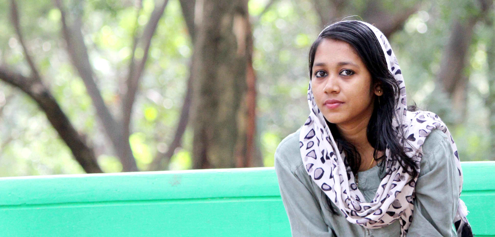

Websites with intention
01Responsive marketing sites and landing pages, translating Figma designs into carefully crafted web experiences.
HELLO, I’M SURUMI.
A web developer & automation builder turning good ideas into websites that feel right — and workflows that just work.
Explore my work ↓
Made with care.
Built to do more.
01 / WHAT I DO
I connect design, development, and automation to make the whole experience work better.
Responsive marketing sites and landing pages, translating Figma designs into carefully crafted web experiences.
Connecting forms, lead enrichment, and CRM tools so the right information reaches the right place.
02 / A LITTLE ABOUT ME
I enjoy the space where a considered design meets a useful system. From the first interaction to what happens after the click.
No-code Developer & Marketing Automations · Part-time
Building Webflow and Wix Studio experiences, connecting marketing operations with Make and HubSpot, and simplifying lead distribution.
Webflow Developer · Full-time
Bringing Figma designs to life through responsive marketing pages, custom front-end development, and a focus on visual consistency and performance.
Webflow Developer · Internship
Supporting landing page development, web components, and front-end improvements for user onboarding.
03 / A SMALL EXPERIMENT
Here’s how a form submission can become a connected workflow. Try this illustrative demo.
A visitor submits your website form.
Clay enriches the lead information.
Make routes the lead to your CRM.
Your team gets notified. Right on time.
One click. A few less things on your to-do list.
04 / YOUR NEXT GOOD IDEA
A website, a workflow, or something in between.
I’d love to hear what you have in mind.